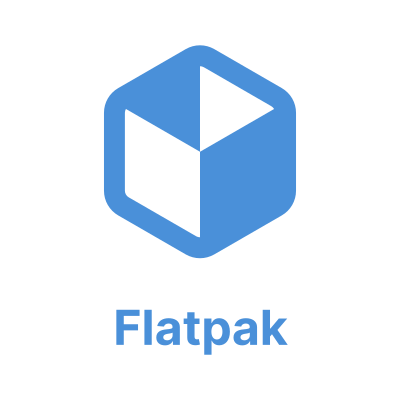
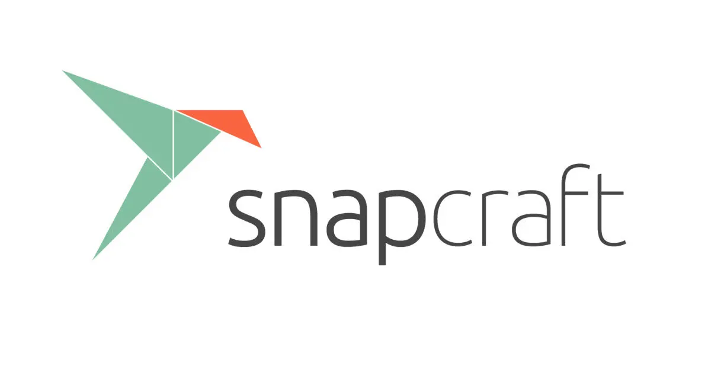
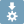

Find your next favourite.
Browse featured apps, search by name and explore categories for work, creativity and development.
From everyday essentials to your next creative project. Find your apps in PelandukOS Software, or explore the freedom of Flatpak, Snap and AppImage.

A native app for discovering and installing packages from your configured PelandukOS APT repository. Available in English and Bahasa Melayu.
Browse featured apps, search by name and explore categories for work, creativity and development.
Read package details and see which applications are already installed on your system.
Refresh the APT catalog and install packages with system authorization through Polkit.
PelandukOS Software manages the configured APT catalog. Flatpak, Snap and AppImage use their own tools and sources.
Choose the format that fits your app and the way you work.
System packages and applications from configured repositories, managed together with their dependencies.
Use PelandukOS Software ↗
DESKTOP APPSExplore desktop applications through sources such as Flathub. Set up the runtime and repository before installing apps.
Explore Flathub ↗
STORE & TOOLSDiscover applications in the Snap Store. Snap packages use snapd to install and manage apps on your system.
Visit the Snap Store ↗
PORTABLE FORMATGet an AppImage from its publisher, allow it to run as a program and launch it. Some apps need additional runtime libraries.
Read the AppImage guide ↗Available apps and runtime setup depend on your PelandukOS release and configured sources. The screenshot shows the 3.5 preview.
A few things to know before you install your next app.
Open PelandukOS Software and search for the app you need. If it is not in your configured APT catalog, check the publisher’s recommended Linux package format.
The native Software app uses the PelandukOS APT catalog. Use Flatpak and Snap tools for their respective packages, and launch AppImage files separately.
Downloading new packages and refreshing repository catalogs generally need internet access. An app’s offline capabilities depend on the app itself.
Explore the desktop, choose your edition and find your next project.